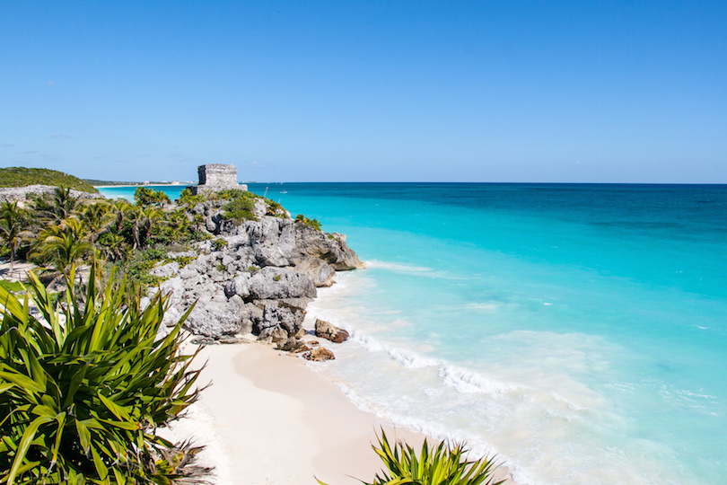

Tulum is situated on the east coast of the Yucatan Peninsula. It once served as the major port of the Mayan city of Coba. Tulum was built around 1200 AD when the Mayan civilization was already in decline and therefore lacks the elegance of some other famous sites. The tropical beach backdrop however makes this a stunning top attraction which should not be missed. Accommodation can range from simple cabanas to 5 star luxury resorts.